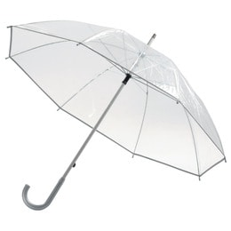
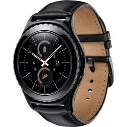

<main>
        <section id="main_found">
            <h2 id="found">Знайдено</h2>
            <article class="button_main" id="found_first">
                <h4>Знайдено шапку</h4>
                
            </article>
            <article class="button_main" id="found_second">
                <h4>Знайдено ключі</h4>
                
            </article>
            <article class="button_main" id="found_third">
                <h4>Знайдено парасольку</h4>
                
            </article>
            <article class="button_main" id="found_fourth">
                <h4>Знайдено годинник</h4>
                
            </article>
        </section>
        <section id="main_lost">
            <h2 id="lost">Загублено</h2>
            <article class="button_main" id="lost_first">
                <h4>Загублено документи</h4>
                
            </article>
            <article class="button_main" id="lost_second">
                <h4>Загублено паспорт</h4>
                
            </article>
            <article class="button_main" id="lost_third">
                <h4>Загублено телефон</h4>
                
            </article>
            <article class="button_main" id="lost_fourth">
                <h4>Загублено гаманець</h4>
                
            </article>
        </section>
    </main>